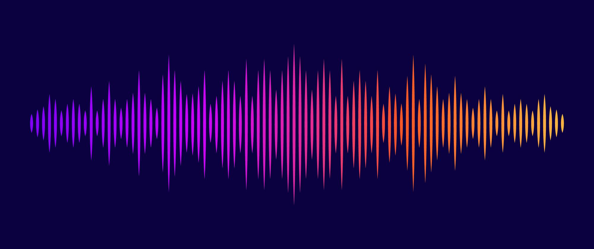

Introduction to Classical Music
Created by Meghraj Goswami
A few key terms
Sangeet
The amalgamation of singing, playing instruments and gesticulating or gesturing.
Two major systems of music - Uttari or Hindustani and Dakshini or Carnatic.
Theory and Practice
Practice: Raga, Aalap-Taan, Sargam, Jhala, Tukra, Kaida, Gat, Meend, Khatka-Murki etc
Theory: Two types, Practical Theory and Pure Theory
Practical theory: Raga Parichay, Swarlipi, Taan-Alaap, Comparision between Similar Ragas etcPure theory: Definitions, Jati, Aaroh-Avroh, Laya, Matra, Taal, Sum, Khali etc
Aandolan, Dhvani & Naad
Everything we hear. Some are peaceful to hear, and are called Naad.
Back and forth vibrating movement of the strings is called Aandolan or Kampan. Aandolan leads to generation of Dhvani.

Naad
Sweet dhvanis created by proper, stable vibrations, that are fit to be used in sangeet.
There are three characteristics of Naad:
- Loudness and softness
- Index position
- Group and quality
Shruti
Infinite naad in a saptak, ie Sa to Ni, but ancient scholars estimated there to be at most 22 naad that the human ear could detect and a singer or musical instrument could produce.
Some scientific evidence shows that the number of perceptible intermediate tones may be less or more than 22. The phenomenon of intermediate tones is pursued as an active area of research in Indian Musicology.
Svara
12 prominent shrutis out of the 22.
Shadaj, Rishabh, Gandhar, Madhyam, Pancham, Dhaivat, Nishad, or simply as they're most commonly known, Sa, Re, Ga, Ma, Pa, Dha, Ni.
Two types: Shuddh (Pure) or Vikrit (Distorted)
Vikrit: Komal (Flat) or Teevra (Sharp)
Chal svar: Re, Ga, Ma, Dha & Ni
Achal svar: Shadaj and Pancham